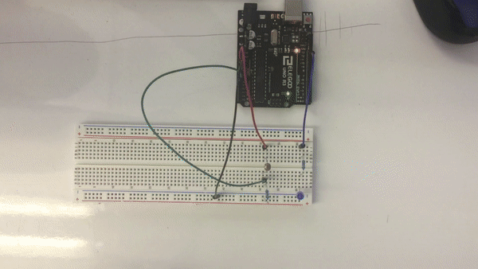

 Image 1. The final product of assignment three, a circuit with a blue LED that changes based upon the amount of light recieved by a photoresistor.
Here is all the documentation for assignment 2!
 Image 2. A schematic of the LED x Photoresistor circuit.
The green and blue LEDs are using 330 ohm resistors. Given a 3.2 voltage drop, and V=IR, 5-3.2=x*330, we have a current of 12mA.
The button uses a 10k ohm resistor. This is to function as a pulldown and to avoid leaving our 5V input hanging without an out. The 10k ohm resistor was chosen because it is enough to establish a LOW state when the button is not pressed.
Image 2. A schematic of the LED x Photoresistor circuit.
The green and blue LEDs are using 330 ohm resistors. Given a 3.2 voltage drop, and V=IR, 5-3.2=x*330, we have a current of 12mA.
The button uses a 10k ohm resistor. This is to function as a pulldown and to avoid leaving our 5V input hanging without an out. The 10k ohm resistor was chosen because it is enough to establish a LOW state when the button is not pressed.
//initializes pin modes
void setup() {
//sets digital pin 12 as our led output
pinMode(11, OUTPUT);
//sets analog 0 to be our sensor input
pinMode(A0, INPUT);
//sets the baud rate for the serial monitor and enables said monitor
Serial.begin(9600);
}
//listens for changes in voltage and affects the led accordingly
void loop() {
//provides a constant read-out of the unfiltered sensor value
Serial.println(analogRead(A0));
//lowest read A0 value = 370, (370 x .049 = 1.813 Volts)
//highest read A0 value = 730, (730 x .049 = 3.577 Volts)
//constrains the sensor values to more accurately reflect possible voltage reads
int sensorVal = constrain(analogRead(A0),380,720);
//maps sensed darkness with brighter led output and brightness with dim led output
int outputVal = map(sensorVal, 720, 380, 0, 255);
//outputs to the led depending upon the brightness sensed
analogWrite(11, outputVal);
}